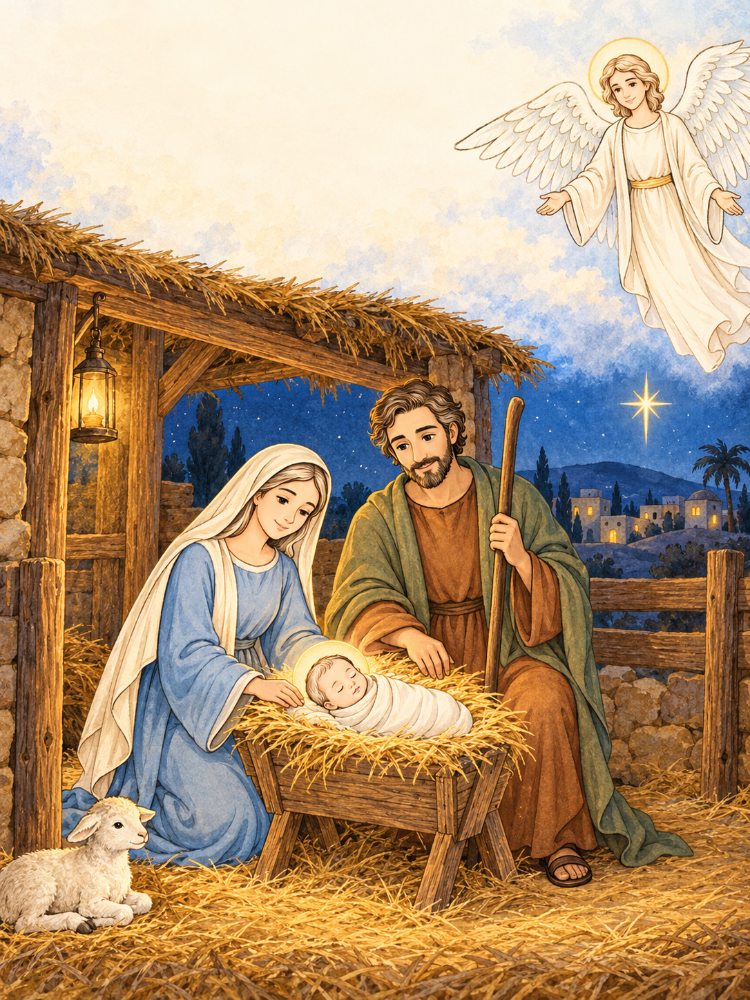
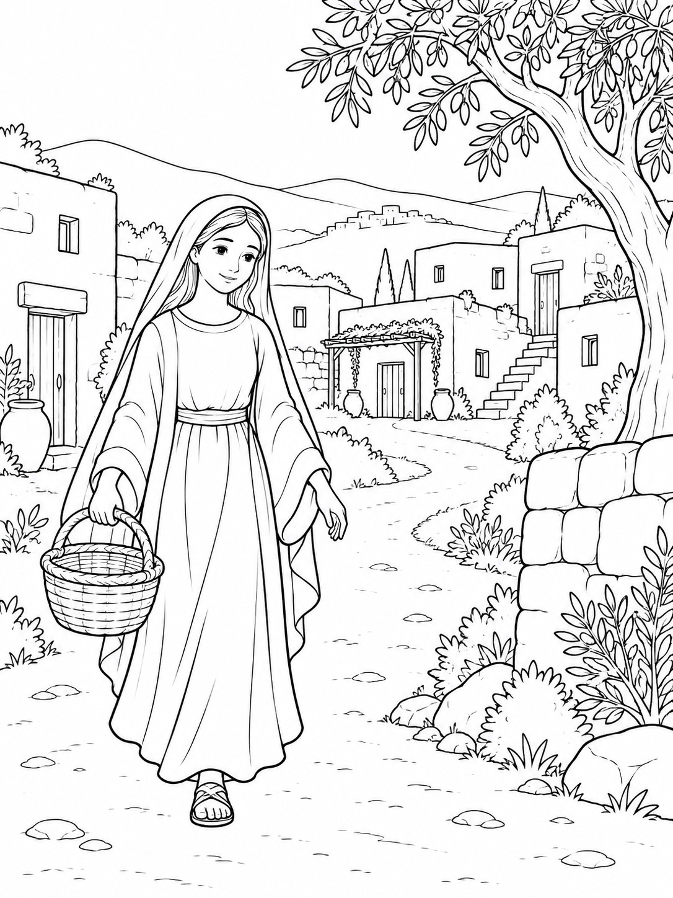
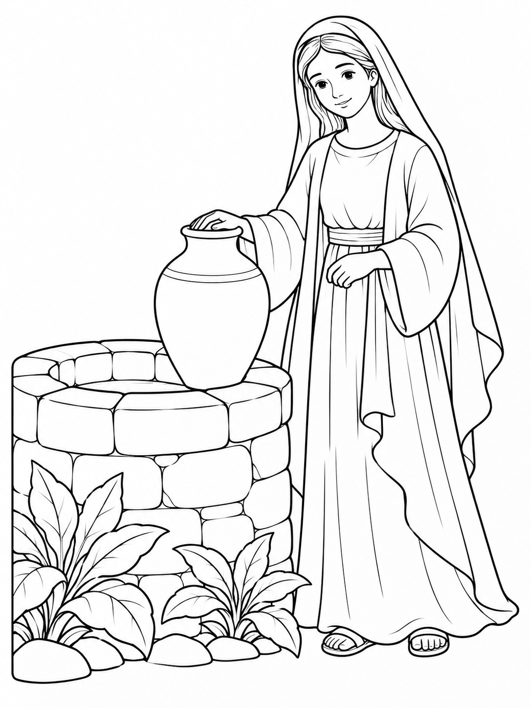
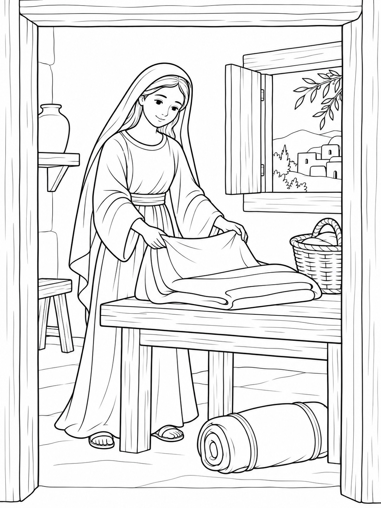

A Christian Christmas coloring story
The Light We Share
Journey to Bethlehem. Read about the birth of Jesus together.
Printable PDF · English · Ages 6+
60 distinct illustrations · 4 PDF files
Buy on Etsy · €5.90One book, both paper sizes. Digital download only; no physical book. Etsy shows the final total, including any local currency conversion or applicable tax, before payment.

Read a little. Color a little.
A story to share, one scene at a time.
The Light We Share follows Mary and Joseph, the birth of Jesus and the shepherds in an original Christian coloring story.
Each scene has a short English caption. Gospel events from Luke 1-2 and Matthew 1 are retold in simple prose, and imagined everyday moments are clearly marked. Read together, then add your own colors.
Look inside
Start with the first three scenes.
Three actual illustrations and their English story captions.

Chapter 1 · Scene 1
A Town Among the Hills
Our story begins in Nazareth, where Mary lived. A great promise would reach this small town.
Actual illustration and caption from the book. View the illustration


Chapter 1 · Scene 2
A Jar for the Morning
At the well, we imagine Mary preparing to carry water home. Even an ordinary morning can hold room for wonder.
Actual illustration and caption from the book. View the illustration


Chapter 1 · Scene 3
Threads of an Ordinary Day
In this imagined moment, Mary folds a piece of cloth. Soon she will hear news she never expected.
Actual illustration and caption from the book. View the illustration

What you receive
One story. Two paper sizes.
The digital book contains 60 distinct coloring illustrations with short English captions, arranged in 6 chapters. Each paper size has 63 pages in total: the 60 illustrated scenes, one cover and two introductory pages.
4 PDF files: two A4 parts and two US Letter parts. Choose one paper size, then read Part 1 followed by Part 2. Both sizes contain the same story and illustrations; the second size does not add new designs.
| Paper | Part 1 | Part 2 |
|---|---|---|
| A4 210 × 297 mm | 33 pages Cover, introductions, scenes 1–30 | 30 pages scenes 31–60 |
| US Letter 8.5 × 11 in | 33 pages Cover, introductions, scenes 1–30 | 30 pages scenes 31–60 |
Before you print
A few practical details.
How do I read and color the story?
Read the short caption together, then color its illustration. Follow the numbered scenes in order, a few pages or a chapter at a time. Adults can read the English text aloud with younger children.
Which paper and print settings should I use?
Choose both PDF parts for your paper: A4 or US Letter. Start with one test page at Actual size / 100%. Print single-sided for an unprinted back. The PDF does not include blank reverse pages. Use scrap paper underneath if you color with markers.
Is this a physical book?
No. This is a digital PDF download. Printed pages, coloring supplies and a bound book are not included.
How does the Etsy download work?
After Etsy confirms payment, download the files from Purchases and reviews on Etsy.com in a web browser. Guest buyers can use the download link in their Etsy receipt email. Etsy’s download guide has current instructions.
May I print it for a group?
One purchase permits noncommercial use within one household OR one class or church group. The purchaser may print copies for members of that household or that single group. Do not share or upload the digital files, place them on shared drives, redistribute the page artwork, or resell the files or printed pages. This is not a school-wide, church-wide or commercial license. These use terms do not limit statutory consumer rights.
How does the story use the Bible?
The story retells Gospel events from Luke 1–2 and Matthew 1 in original simple prose. Captions mark imagined everyday moments. This is a family coloring activity, not an official church-approved curriculum or a replacement for reading the Bible.
How was this book created?
This original ARLing project uses AI assistance for both its story text and illustrations. The artwork is not presented as hand-drawn. You can inspect the actual illustrations above before deciding.
The Light We Share
Bring the next chapter to your table.
60 illustrations · 63 pages per size · 4 PDF files. Digital download only.
Buy on Etsy · €5.90